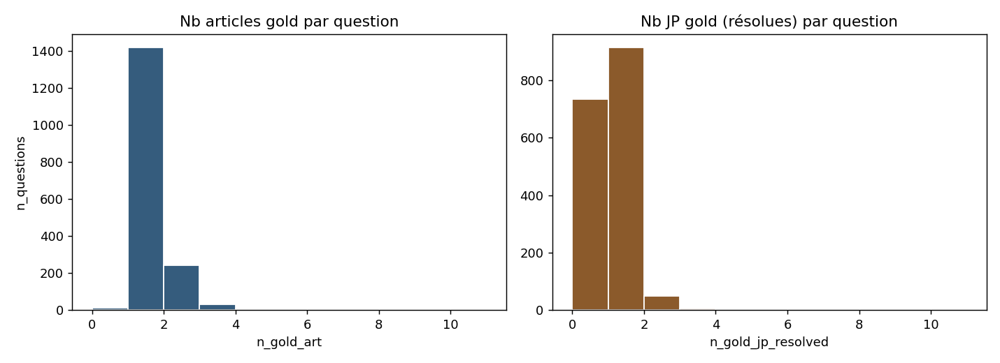
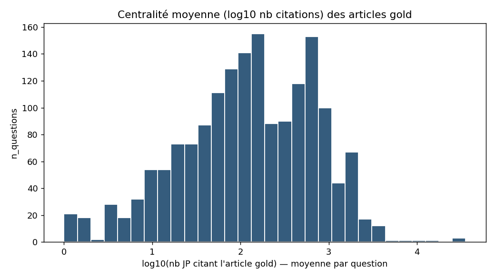
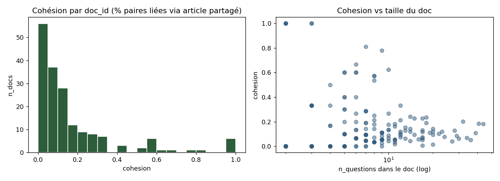

Run 29 mai 2026, script 12_build_question_enriched_graph.py — tripartite construit sur 1 707 questions doctrine_qgen + bipartite article x JP pénal
Idée : superposer les 1 707 questions du benchmark (corpus_strict gemma4-26B) au graphe biparti article x JP. On obtient un graphe tripartite où chaque question est ancrée à ses articles gold (arête gold_art) et à ses JP gold (arête gold_jp). On regarde où tombent les questions dans la structure, et si elles forment des clusters thématiques cohérents.
| Type de nœud | n | Source |
|---|---|---|
| article | 87 821 | graph_penal.npz / article_ids |
| JP (pénal) | 118 112 | graph_penal.npz / jp_ids |
| question | 1 707 | corpus_strict_gemma4-26B-A4B.json |
| Type d'arête | n | Définition |
|---|---|---|
JP → article | 642 450 | citation extraite du bipartite (binarisé, donc nnz = arêtes) |
question → article (gold_art) | 2 003 | articles_attendus résolus dans le pool |
question → JP (gold_jp) | 1 033 | jp_attendues mappées par pourvoi CC → jp_id |
Note : le total d'arêtes JP→article du bundle est 2 026 258 (avec multiplicités) ; ici la matrice sparse stockée est binarisée et l'index data contient 642 450 entrées non nulles. C'est le « squelette » non pondéré, suffisant pour la topologie.
| Élément | Total demandé | Résolu | % |
|---|---|---|---|
| articles attendus | 2 023 | 2 003 | 99,01 % |
| JP attendues (toutes juridictions) | 1 891 | 1 033 | 54,63 % |
| questions avec ≥ 1 article gold résolu | 1 707 | 1 694 | 99,2 % |
| questions avec ≥ 1 JP gold résolue | 1 707 | 971 | 56,9 % |
Trou côté JP gold : seuls 54,6 % des pourvois attendus sont mappables au pool. Cause : le pool ne contient que les JP pénales (juris=CC pénal essentiellement), or les questions doctrine_qgen citent aussi des arrêts civils, sociaux ou des CA / TJ qui ne sont pas dans jp_index_penal.parquet. Pas une régression — c'est conforme au scope « pénal ».
→ 736 questions n'ont aucune JP gold dans le pool ; elles ne peuvent pas être évaluées sur la branche JP. Côté article, 99 % de couverture : la branche article reste solide.

| Métrique | Valeur |
|---|---|
| nb composantes (graphe entier) | 59 981 |
| taille composante principale | 147 609 nœuds (71,1 %) |
| questions dans la composante principale | 1 699 / 1 707 (99,5 %) |
| questions isolées (aucun voisin gold résolu) | 7 |
Surprise positive : seules 7 questions sont topologiquement orphelines, et 1 699 / 1 707 sont dans la composante géante. Le graphe biparti article x JP a beau être lourdement fragmenté (59 981 composantes — la moitié des JP sont quasi-isolées), les questions atterrissent presque toutes dans le cœur connexe. C'est cohérent avec le Gini 0,953 du graphe : les questions ciblent des articles fréquemment cités, donc bien intégrés.
| Statistique | Valeur |
|---|---|
| k-core max observé (graphe biparti) | 32 |
| core moyen des cibles d'une question — médiane | 10 |
| core moyen — P25 / P75 | 7 / 12 |
| core max — médiane | 12 |
La cible médiane d'une question vit dans le 10-core (sur un max de 32). Les questions visent des zones structurellement denses du graphe, pas la périphérie. C'est important pour un GNN : le voisinage à 1-hop d'une cible typique contient déjà ≥ 10 JP et articles, donc une vraie information de message-passing.

| Bucket (nb JP citant l'article gold, moyenne par question) | n_questions | % |
|---|---|---|
| < 10 citations (articles très spécifiques) | 140 | 8 % |
| 10 – 100 | 585 | 35 % |
| 100 – 1 000 | 806 | 48 % |
| > 1 000 (articles « stars ») | 161 | 10 % |
Médiane = 134 citations / article gold. Distribution roughly log-normale.
Biais doctrine_qgen : le corpus survisite les articles moyennement à fortement cités. Seules 8 % des questions ciblent des articles < 10 citations (le « tail spécifique »). Pour un GNN, c'est confortable (signal disponible) mais ça veut dire qu'on n'évalue pas la capacité à retrouver des articles rares.
Deux questions sont voisines ssi elles partagent ≥ 1 article gold.
| Métrique | Valeur |
|---|---|
| nb paires (q, q) liées | 4 412 |
| nb composantes | 550 |
| plus grande composante | 143 questions |
| questions totalement isolées (aucune voisine) | 305 (18 %) |
| plus grande clique | 38 questions |
| cliques de taille ≥ 3 | 240 |
Chiffre frappant : il existe une clique de 38 questions partageant toutes le même article (sans doute un article « hub » du Code de procédure pénale type art. 593 ou art. préliminaire). Ces 38 questions sont structurellement redondantes du point de vue gold-article — un système qui réussit l'une devrait réussir les autres.
305 questions (18 %) sont totalement déconnectées de toute autre via partage d'article : elles testent un signal unique. Ce sont les cas où la généralisation est vraiment évaluée.
doc_id)
| Métrique | Valeur |
|---|---|
| nb doc_id avec ≥ 2 questions | 178 |
| cohésion moyenne (% paires intra-doc liées via article partagé) | 16,8 % |
| cohésion médiane | 9,5 % |
Cohésion thématique faible : en moyenne, dans un même fascicule de doctrine (doc_id), seules ~17 % des paires de questions partagent au moins un article gold. Le doc_id n'est pas un proxy fiable du voisinage article-graphe. Beaucoup de fascicules ont une cohésion de 0 % (les questions parlent du même thème doctrinal mais sur des articles disjoints).
Implication : si on cherche à structurer des « groupes thématiques » pour un GNN, il faudra utiliser le clustering structurel (composantes du QQ-network) plutôt que le doc_id.
art_376_a_380_fasc_20_cour_d_assises — 3 qart_53_a_73_fasc_20_crimes_et_delits_flagrants — 3 qart_601_a_604_fasc_20_pourvoi_en_cassation — 2 qart_11_fasc_30_revelation_d_informations — 2 qart_689_a_696_fasc_unique_decisions_repressives_etrangeres — 2 qart_preliminaire_fasc_40_droits_des_victimes — 4 qart_lo_630_fasc_20_QPC — 4 qart_75_a_78_fasc_20_enquete_preliminaire — 5 qart_802_fasc_20_nullite — 3 qart_75_a_78_fasc_15_enquete_preliminaire_post_2021 — 2 q